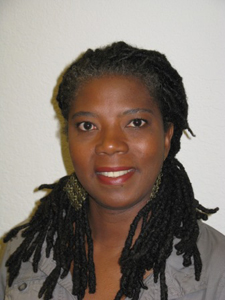

January 28, 2012
"How Can Mathematics and Computers Help Us Understand Why Cancer Cells Misbehave?"
An interactive session led by Dr. Suzanne Weekes
Associate Professor and Associate Head of Mathematical Sciences at Worcester Polytechnic Institute (WPI).
Director for the Center for Industrial Mathematics and Statistics at WPI.
Co-director of the MSRI-UP program in Berkeley, California.

Computers have become faster, better, and stronger over the last few decades. Now, put a mathematician together with these supercomputers and things get even better! In this presentation, we will show what mathematicians do outside the classroom and lecture hall to help us understand how cancers develop, interact, evolve and how we can fight them. We can model tumor development by considering simple models of individual tumor cells that live and interact with each other. Each of our model cells obeys prescribed rules for moving around, dividing in two, and dying. Starting with a group of cells, what happens when we push "play" and let them interact? What happens when we change the rules? Is there a big effect on what we see? Can we simulate what's going on in a full size tumor on our laptop? How do we include chemicals and toxins that influence the decisions that the cells make in our model? We'll see some of the many cool things mathematicians can do to help improve our lives."How Can Mathematics and Computers Help Us Understand Why Cancer Cells Misbehave?"
An interactive session led by Dr. Suzanne Weekes
Associate Professor and Associate Head of Mathematical Sciences at Worcester Polytechnic Institute (WPI).
Director for the Center for Industrial Mathematics and Statistics at WPI.
Co-director of the MSRI-UP program in Berkeley, California.
Dr. Suzanne L. Weekes is an Associate Professor and Associate Head of Mathematical Sciences at Worcester Polytechnic Institute (WPI). In addition, she is the director for the Center for Industrial Mathematics and Statistics http://www.wpi.edu/+CIMS at WPI and runs the Research Experience for Undergraduates Program in Industrial Mathematics and Statistics http://www.wpi.edu/+CIMS/REU there. Professor Weekes is also a co-director of the MSRI-UP program http://www.msri.org/up in Berkeley, California. Her research interests are in numerical methods for differential equations and industrial mathematics.